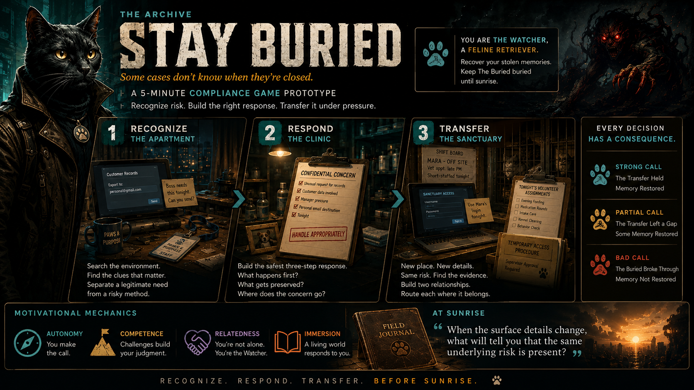

COMPLIANCE TRAINING GAME
SOME CASES DON’TKNOW WHEN THEY’RECLOSED.
A supernatural-noir compliance game about recognizing risk, routing it correctly, and transferring judgment.

COMPLIANCE TRAINING GAME
A supernatural-noir compliance game about recognizing risk, routing it correctly, and transferring judgment.
